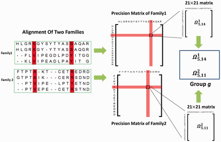

Advanced homology modeling

Although we do not intend to compile the evolution of modeling methods, I briefly outline below the origin and transformation of advanced protocols that outperform single-template homology modeling during the last three decades. This stepwise evolution of modeling methods is the origin of the revolution of Alphafold, which we will review later.
From homology modeling to threading
Threading or Fold-recognition methods
As mentioned earlier, the introduction of HMM-based profiles during the first decade of this century led to a great improvement in template detection and protein modeling in the twilight zone, i.e., proteins with only distant homologs (<25-30% identity) in databases. Current version of SwissModel and the use of HHPred+Modeller already rely on HMM profiles for template identification and alignment. In order to exploit the power of HMM searches, those methods naturally evolved into iterative threading methods, based on multitemplate model construction, implemented in I-TASSER (Roy, Kucukural, and Zhang 2010), Phyre2 (L. A. Kelley et al. 2015), and RosettaCM (Song et al. 2013), among others. These methods methods are usually referred as Threading or Fold-recognition methods. Both terms can be often used interchangeably, although some authors see threading as any technique that uses structural information in addition to sequence information to identify remote homologies, while threading would be a more complex process of modeling including remote homologies and also modeling of pairwise amino acid interactions in the structure. Therefore, although we have already used HHPred along with the use of HHPred to identify templates for a subsequent modeling, could be indeed considered as threading.

The iterative threading assembly refinement (I-TASSER) from Yang Zhang lab is one of the most widely used threading methods and servers. This method was was ranked as the No 1 server for protein structure prediction in the community-wide CASP7, CASP8, CASP9, CASP10, CASP11, CASP12, CASP13, and CASP14 experiments. I-TASSER first generates three-dimensional (3D) atomic models from multiple threading alignments and iterative structural assembly simulations that are iteratively selected and improved. The quality of the template alignments (and therefore the difficulty of modeling the targets) is judged based on the statistical significance of the best threading alignment, i.e., the Z-score, which is defined as the energy score in standard deviation units relative to the statistical mean of all alignments.
First, I-TASSER uses Psi-BLAST against a curated databases to select sequence homologs and generate a sequence profile. That profile is used to predict secondary structure and generate multiple fragmented models using several programs. The top template hits from each threading program are then selected for the following steps. In the second stage, continuous fragments in threading alignments are excised from the template structures, and are used to assemble structural conformations of the sections that aligned well, with the unaligned regions (mainly loops/tails) built by ab initio modeling. The fragment assembly is performed using a modified replica-exchange Monte Carlo random simulation technique, which implements several replica simulations in parallel using different conditions that are periodically exchanged. Those simulations consider multiple parameters, including model statistics (stereochemical outliers, H-bond, hydrophobicity…), spatial restrains and amino acid pairwise contact predicions (see below). In each step, output models are clustered to select the representative ones for the next stage. A final refinement step include rotamers modeling and filtering out steric clashes.
One interesting thing about I-TASSER is that it is integrated within a server with many other applications, including some of the tools that I-TASSER uses and other advanced methods based by I-TASSER, like I-TASSER-MTD for large, multidomain proteins or C-I-TASSER that implements a deep learning step, similar to Alphafold2 (see below).
RosettaCM is an advanced homology modeling or threading algorithm by the Baker lab, implemented in Rosetta software and the Robetta webserver. RosettaCM assemblies the model by recombining aligned segments in a set of selected templates and close the model by a minimization of the junctions between segments by fragments torsion and iterative optimization steps that include Monte Carlo sampling. Finally, an all-atom refinement towards a minimum of free energy (Song et al. 2013).
1D features prediction
Threading methods often incorporate additional information beyond MSAs. By definition 1D features are protein features that can be decoded directly from the protein primary structure and represented as values (categories, %, …) associated to individual residues in the sequence. For instance, we can assign a secondary structure state (symbol or probability) to each residue. Threading and ab initio structure prediction methods implement or call third parties methods to predict secondary structure and other 1D features, as important additional information during modeling process.
You can find links to several 1D features prediction tools in the Modeling Resources section.
Secondary structure prediction
Regarding experimentally-based structures, secondary structures can be automatically assigned using DSSP (Define Secondary Structure of Proteins) algorithm, originally written in 1983 and updated several times throughout the years, being the last version from 2021 (available on GitHub). This algorithm classifies each residue considering its geometry and H-bonds prediction by comparison with pre-existing patterns in DSSP database. Remarkably, DSSP does not predict secondary structures, it just extracts this information from the 3D coordinates.
Prediction of secondary structure (SS) from protein sequences is based in the hypothesis that Segments of consecutive residues have preferences for certain secondary structure states. Similar to other methods in bioinformatics, including protein modeling, approaches to SS prediction evolved during the last 50 years (see Table 1).
First generation methods rely on statistics approaches and prediction depends on assigning a set of prediction values to a residue and then applying a simple algorithm to those numbers. I.e. apply a probability score based on single amino acid propensity. In the 1990’s, new algorithms included the information of the flanking residues (3-50 nearby amino acids) in the so-called Nearest Neighbor (N-N) Methods. These methods increased the accuracy in many cases but still had strong limitations, as they only considered three possible states (helix, strand or turn). Moreover, as you know from the secondary structure practice, β-strands predictions are more difficult and did not improve much thanks to N-N methods. Additionally, predicted helices and strands were usually too short.
By the end of 1990 decade, new methods boosted the accuracy to values near to 80% and even 90%. These methods included two innovations, one conceptual and one methodological. The conceptual innovation was the inclusion of evolutionary information in the predictions, by considering the information of multiple sequence alignments or profiles. If a residue or a type of residue is evolutionary conserved, it is likely that it is important to define SS stretches. The second innovation was the use of neural networks in which multiple layers of sequence-to-structure predictions were compared with a independently trained networks (see PHD paper by Burkhard Rost here).
In the last years, most commoly used methods are meta-servers that compare several algorithms, mostly based o neural-networks, like JPred or SYMPRED, among others.
| Type | Method | Accuracy |
| Statistics | Chow & Fassman (1974-) | 57% |
| GOR (1978-) | 63-73.5% (Version V) |
|
| Nearest Neighbor (N-N) methods | PREDATOR (1996) | 75% |
| NNSSP (1995) | 72% | |
| N-N neural network | APSSP | Up to 86% |
| PsiPRED (1999-) | 75.7% (1999) 84% (2019) |
|
| PHD (1997) | 74% | |
| HMM | SAM | 76% |
| META-Servers | Jpred4 | |
| GeneSilico (Discontinued) | ||
| SYMPRED |
Structural disorder and solvent accessibility
The expression disorder denote protein stretches that cannot be assigned to any SS. They are usually dynamic/flexible, thus with high B-factor or even missing in crystal structures. These fragments show a low complexity and they are usually rich in polar residues, whereas aromatic residues are rarely found in disordered regions. These motifs are usually at the ends of proteins or domain boundaries (as linkers). Additionally, they are frequently related to specific functionalities, such in the case of proteolytic targets or protein-protein interactions (PPI). More rarely, large disordered domains can be conserved in protein families and associated with relevant functions, as in the case of some transcription factors, transcription regulators, kinases…
There are many methods and servers to predict disordered regions. You can see a list in the Wikipedia here or in the review by Atkins et al. (2015). The best-known server is DisProt, which uses a large curated database of intrinsically disordered proteins and regions from the literature, which has been recently improved to version 9 in 2022, as described in Quaglia et al. (2022).

Hydrophobic collapse is usually referred to as a key step in protein folding. Hydrophobic residues tend to be buried inside the protein, whereas hydrophilic, polar amino acids are exposed to the aqueous solvent.
Solvent accessibility correlates with residue hydrofobicity (accessibility methods usually better performance). Therefore, estimation of how likely each residue is exposed to the solvent or buried inside the protein is useful to obtain and analyze protein models. Moreover, this information is useful to predict PPIs as well as ligand binding or functional sites. Most methods only classify each residue into two groups: Buried, for those with relative accessibility probability <16% and Exposed, for accessibility residues >16%.
Most common recent methods, like ProtSA or PROFacc, combine evolutionary information with neural networks to predict accessibility.
Trans-membrane motifs and membrane topology
Identification of transmembrane motifs is also a key step in protein modeling. About 25-30% of human proteins contain transmembrane elements, most of them in alpha helices.
The PDBTM (Protein Data Bank of Transmembrane Proteins) is a comprehensive and up-to-date transmembrane protein selection. As of September 2022, it contains more than 7600 transmembrane proteins, 92.6% of them with alpha helices TM elements. This number of TM proteins is relatively low, as compared with more than 160k structures in PDB, as TM proteins are usually harder to purify and crystalization conditions are often elusive. Thus, although difficult, accurate predictions of TM motifs and overall protein topology can be essential to define protein architecture and identify domains that could be structurally or functionally studied independently.

Current state-of-the-art TM prediction protocols show an accuracy of 90% for definition of TM elements, but only a 80% regarding the protein topology. However, some authors claim that in some types of proteins, the accuracy is not over 70%, due to the small datasets of TM proteins. Most recent methods, based in deep-learning seem to have increased the accuracy to values near 90% for several groups of proteins (Hallgren et al., n.d.).
From contact maps to pairwise high-res feature maps
During the last decade, the introduction of residue-residue contact or distance maps prediction based on sequence co-evolution and deep learning started a revolution in the field that crystallize with the arrival of Alphafold2 and RoseTTAfold as major breakthroughs with great repercussions in diverse fields. As shown in Figure 3, residue-residue contact maps can be obtained from structures as a matrix that show close residues and show a pattern that clearly show differences between motifs and secondary structure stretches.
An accurate information of protein’s residue–residue contacts is sufficient to elucidate the fold of a protein (Olmea and Valencia 1997); however implementation of these maps in protein modeling is not trivial, as predicting that map is not always easy. The introduction of evolutionary coupling analysis (ECA), i.e., extract the residue coevolution from MSAs (Figure 4) improved contact maps and allowed their implementation for protein folding in several methods, like PSICOV (Jones et al. 2012) or Gremlin (Kamisetty, Ovchinnikov, and Baker 2013), among others. However, it should be noted for proteins without many sequence homologs, the predicted contacts were of low quality and insufficient for accurate contact-assisted protein modeling.

The next level of complexity in contact maps is their application to distantly related proteins (Figure 5). This kind of analysis entails processing a huge amount of information, which increases the computational resources requirements.
Deep learning is a sub-field of machine learning which is based on artificial neural networks (NN). Neural networks were introduced actually in the late 40’s and 50’s, but they reappeared in the 2000’s thanks to the increase in computational capacities and, more recently, the use of GPUs. Briefly, a NN uses multiple interconnected layers to transform multiple inputs (MSAs, high-resolution contact-based maps…) into compound features that can be used to predict a complex output, like a 3D protein structure. As their name indicates, NNs attempt to simulate the behavior of the human brain that processes large amounts of data and can be trained to “learn” from that data. Deep learning is based on the use of multiple layer-NN to optimize and refine for accuracy.
In this context, the introduction of supervised machine learning methods that predict contacts from distant protein families, outperforms ECA methods by the use of multilayer neural networks (Jones et al. 2015; Ma et al. 2015b; Wang et al. 2017; Yang et al. 2020). These methods implemented the use of the so-called high resolution contact maps, which contains enriched information with not only contacts but also distances, and angles, represented in a heatmap-like probability scale.